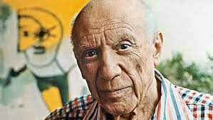

Začátek
Na projektu jsme začali pracovat 18.3.2023.
Tím, že bydlíme daleko od sebe a nechtěli jsme moc dojíždět k
sobě,
tak jsme se rozhodli, že začneme pouze hovory. Měli jsme dlouhou debatu o zpracování. Po podlouhlých hodinách
jsme se vždy dobrali k obrazu neznámého autora.
Problémy
Když jsme chtěli začít dílo zpracovávat, tak jsme se vždy dostali k tomu, že dílo není od Pabla
Picassa jak nám
Google i veškeré informace okolo říkali.
Zkoušeli jsme hledat dál a dál a vždy to dopadlo takhle nebo jen
dílo
bylo nadmíru těžké zpracovat pro náš tým. Procházeli jsme to společně v hovoru dalších pár dní a nevěděli si
rady.
Inspirace
Rozhodli jsme se dotázat, zda by mohla přijít v potaz i tato varianta. Následně po dotazu ohledně děl, které
bychom mohli zpracovat, nám bylo umožněno se dostat k tomuto „skvostu“.
Ačkoliv tato inspirace obsahuje pouze pana Pabla Picassa jako jeho portrét a autor je jiný (bohužel jsme
nikde nenašli proč pan Victor Hugo Mariano vytvořil), tak jsme se domluvili na zpracování tohoto.

Zpracování
Při důkladném promýšlení jsme se dobrali k tomu, že dílo zpracujeme oba. Vzali jsme si papír a pastelky do rukou
a začali kreslit. Ačkoliv kreslení pro nás nebylo zrovna nejjednodušší, tak jsme své malebné činy měli do hodiny
hotové. Pak přišla na řadu příprava na focení. V této chvíli jsme oba zjistili, že jsme velikost obrázku moc
nepropočítali. Vyfotili jsme se z mnoha úhlů a snažili se dílo dostat do nejbližší podoby. V té chvilce jsme si
naše díla poslali a rozhodli, kterou verzi vybereme, a tak vznikly tyto naše remaky.